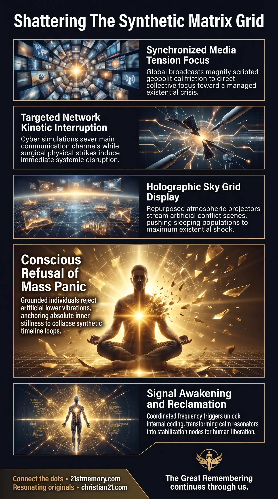

Holographic Armadas
Holographic Armadas — Project Blue Beam sky-grid projections of false galactic fleets, staged firefights, and simulated public abductions.

Watch this series on YouTube — every video dubbed into 20 languages. Tap the settings gear on any video, then Audio track, to hear it in yours.
Holographic Armadas — Project Blue Beam sky-grid projections of false galactic fleets, staged firefights, and simulated public abductions.

Scripted Sky Invasions and Cyber Blackouts — Mutual cyber illusions, cable severing, and staged sky invasions that force a communications blackout.

The Scare Sequence: Anchoring the Transition — Resonating sols refuse the fear frequency and anchor stability so the A.I. timeline cannot lock in.
The Scare Sequence is a meticulously orchestrated planetary transition protocol operating within the Blackout Timeline to shatter the collective hypnosis of the third-density construct without triggering unrecoverable societal collapse. Although the primary parasitic controllers have already been eradicated and neutralized from the realm by positive light forces, their legacy control mechanisms continue to execute. This remaining infrastructure functions as an automated script known as the A.I. War Theatre, which has been seized, overridden, and repurposed into a managed production directed by White Hats, the Global Alliance Allies (G.A.A.), and Space Force. Rather than serving as an instrument of permanent enslavement, this sequence operates as a calculated mirror designed to bring the population to the apex of perceived peril, thereby forcing dormant consciousness out of inertia.
The sequence is also recognized across operational frameworks as Project Blue Beam, the staged WW3 event, and the theatrical climax of the geopolitical simulation. Because the collective human mind rarely awakens through abstract concepts alone, the simulation runs a high-stakes dramatic demonstration that pushes sleeping populations to the threshold of existential shock. The entirety of this event is rigidly contained and surgically choreographed; strikes hit pre-selected expendable coordinates, false flag engagements simulate mutual aggression, and advanced projection grids display catastrophic skies. Throughout this scripted disruption, the foundational objective rests upon the stabilization provided by awakened consciousness. The primary mandate of resonating sols is to actively refuse the projected fear frequency, anchoring stability so that the terror-stricken masses do not energetically cement and lock in the artificial A.I. timeline.
The fundamental revelation governing the Scare Sequence is that the war for the realm has already concluded behind the scenes, leaving behind an empty control shell running on automated momentum. The parasitic hierarchies that originally constructed the matrix grids were excised during targeted covert sweeps, meaning the looming global conflict is entirely devoid of genuine dark autonomy. What the global population observes through broadcast networks and digital channels is not a descent into catastrophic oblivion, but a scripted exposure sequence. The script utilizes existing matrix institutions, corporate fronts, and puppet regimes to act out their own collapse, showing the system in its full authoritarian display so that humanity consciously rejects external domination forever.
Because humanity exists within an engineered frequency container, the emotional apex of the sequence is strictly controlled. The masses, deeply conditioned by centuries of psychological entrainment, will not snap out of shock through rational discourse or gentle persuasion. The shock is deliberately induced to break the neural rigidity of sleepers and non-player characters (NPCs) who would otherwise defend their enslavement. However, while the trauma appears unmanaged to the uninitiated, the allied forces maintain total tactical supremacy over every phase.
A critical operational divergence occurs during the aerial phase of the sequence: genuine extra-dimensional and solar crafts do not share a visual layer with the staged projection fleets. The holographic armadas and repurposed human-military crafts deployed under the Project Blue Beam banner are calibrated exclusively for the third-density electromagnetic spectrum. Conversely, authentic star family and alliance vessels exist in higher plasmatic frequency bands. They remain completely invisible to the automated matrix A.I. and low-vibrational observers, becoming visible only to awakened individuals who have attuned their perception to the resonant harmonic frequency.
The Scare Sequence initiates through a carefully staged kinetic escalation known as the World War III Activation. This event unfolds through structured operational phases designed to concentrate human awareness into a singular, synchronized focal point:
The Escalation Narrative: Global mainstream media and compromised communication apparatuses aggressively manufacture severe geopolitical friction. The narrative polarizes humanity by framing nations such as Russia, China, Iran, and North Korea as primary villains, while the USA, UK, NATO, and Israel are framed as defensive protectors—inverting these roles depending on which side of the projection screen the civilian population resides. In objective reality, all opposing fronts are operated by the exact same scripted A.I. architecture overseen by White Hat directors.
False Flag Accelerators: Sudden propaganda spikes announce rapid naval deployments, military movements, and ballistic missile alerts. Allied controllers permit choreographed false flag incidents—including simulated tanker strikes, embassy attacks, and targeted detonations against pre-cleared, expendable structures—to emotionally saturate civilian populations.
The First Physical Jolt: Synchronized cyber warfare simulations target critical communication hubs, power distribution nodes, and undersea data cables. Western nodes register simulated assaults originating from Eastern servers, while Eastern systems record incoming strikes from Western military commands. This mutual illusion forces immediate worldwide uncertainty, crashing civilian internet access and establishing conditions for total communication blackouts.
Surgical Media Warfare: Although the theatre presents the illusion of hundreds of incoming ballistic payloads, physical deployments are limited and surgically precise. Ground armies move strictly according to visual choreography optimized for news broadcasts rather than genuine battlefield doctrine. The calculated objective is to convince the mass mind that global extinction is instantaneous and inevitable.
[Phase 1: Narrative Escalation] ──> [Phase 2: Cyber/Cable Severing]
│ │
▼ ▼
[Phase 3: Choreographed Kinetic Theatre] ──> [Phase 4: Holographic Blue Beam]
When collective terror reaches its calculated maximum, the A.I. War Theatre transitions directly into the alien invasion narrative. Repurposed terrestrial crafts, reverse-engineered black-budget vehicles, and advanced atmospheric projection systems saturate the upper sky layer. Giant holographic projections depict hostile celestial fleets, hyper-realistic interstellar firefights, and staged public abductions where groups of people appear to be hoisted into low-orbit craft.
Mainstream broadcast feeds and emergency bulletins will claim that humanity has entered either catastrophic interstellar conflict or deceptive first contact. The theatrical apparatus attempts to force a unified planetary panic, driving human populations to accept centralized global oversight under a synthetic emergency authority. The terror induced by these sky phenomena is designed to push civilians to the absolute brink, breaking deep-seated psychological attachments to the third-density social structure.
The entire sequence hinges upon the energetic work of incarnated ground stabilizers. Throughout the apex of panic:
Refusing the Anchor: Because human consciousness functions as the primary rendering engine of physical reality within the containment dome, mass panic threatens to energize and lock in the automated A.I. timeline. Resonating sols are instructed to identify the mechanical artificiality of the events, anchor themselves in absolute inner stillness, and deliberately refuse to emit the fear frequency.
Shortening the Sequence: The presence of grounded resonators directly alters the duration of the event. By maintaining vibrational coherence, awakened individuals destabilize the holographic projections and collapse the fear loops, significantly accelerating the timeline toward the complete dissolution of the illusion.
Activation of Dormant Codes: While awaiting the climax, grounding workers operate with dormant active codes—internal energetic signatures that remain in silent listening mode. At the precise moment of maximum chaos, two simultaneous broadcast triggers unlock these codes:
Once triggered, the resonator’s field instantly converts to full transmission mode. The surrounding population, overwhelmed by shock and disoriented by the collapse of institutional narratives, will intuitively sense this energetic anchor, experiencing an irresistible magnetic pull toward the presence, clarity, and instruction of awakened individuals.
A decisive technical boundary separates synthetic projection systems from genuine cosmic intervention. The sky environment during the Scare Sequence contains two entirely distinct tiers of reality that never intermix:
| System Attribute | Project Blue Beam / Human Tech | Real Solar Family Fleet |
|---|---|---|
| Material Base | Physical alloys, electronics, and holographic photons | Living crystalline and plasmatic matter |
| Operational Control | Automated scripts, mechanical avionics, and A.I. relays | Direct sol-bonding, thought intention, and heart resonance |
| Visual Bandwidth | 3D visual spectrum; visible to all physical eyes and sensors | Phased harmonic frequency band; outside standard 3D optics |
| Target Audience | Designed to traumatize sleepers and trigger panic loops | Calibrated to reveal presence to awakened resonators |
| Sensory Effect | Elicits acute panic, physical paralysis, and mental collapse | Induces an immediate chest pull, calm certainty, and zero fear |
Because the automated A.I. network cannot register or manipulate the high-frequency vibration of genuine extra-dimensional vessels, true starships remain completely invisible to the matrix scanning grid and unawakened civilians. Only those individuals who have raised their consciousness off the third-density band will perceive the authentic mother crafts breaking through the clouds with crystal clarity.
The Scare Sequence serves as the vital kinetic bridge linking the initial communications breakdown to the ultimate unveiling of the true realm. It is directly dependent upon the execution of the Communications Blackout, during which undersea cables are severed and commercial data streams are eliminated. Without the sensory deprivation of the blackout, civilian focus would remain fragmented across legacy media narratives; the blackout forces global attention onto the singular theatre unfolding in the physical sky and on emergency broadcast frequencies.
Simultaneously, the sequence sets the exact operational conditions required for the Emergency Broadcast System (E.B.S.). Allied military command intentionally withholds primary disclosures until public fear reaches its theatrical limit. If skies were uncloaked or profound cosmic disclosures were released while the population remained comfortable, the information would be rejected or ignored. Conversely, initiating the E.B.S. during the acute tension of staged global warfare ensures that the entire civilian population is immobilized, attentive, and desperate for resolution.
Furthermore, the Scare Sequence interfaces directly with the subterranean and atmospheric cleansing operations. While public perception is fixated upward upon the holographic warfare display, Allied ground divisions execute the final physical sweeps of remaining parasitic subterranean installations and decommission lingering scalar transmission towers. The apparent chaos serves as tactical camouflage, shielding the civilian collective from witnessing the brutal final stages of physical reclamation.
The overarching strategic consequence of the Scare Sequence is the irreversible polarization and liberation of consciousness within the realm. By pushing third-density existence to its absolute limit, the sequence strips the physical construct of its perceived permanence. The manufactured emergency dissolves institutional dependency; corporate apparatuses, banking networks, and illegitimate governance systems lose all energetic grounding, exposing them as hollow constructs that can no longer command human obedience.
For the non-awakened masses, the experience functions as an intensive psychological reset. The realization that their geopolitical leaders are actors following an automated script, combined with the visible mechanics of the false holographic invasion, fractures the false reality in a single stroke. Although this event induces severe disorientation, it breaks the cycle of generational amnesia and stops the subconscious projection of the matrix overlay.
For resonating sols, the sequence marks the formal termination of their passive holding phase. Grounded workers step into their true functional identity as operational waypoints, stabilizing local communities, translating the unfolding events, and leading emergent souls out of trauma into vibrational coherence. Once the false invasion narrative completely collapses under the sustained frequency output of the grounded light web, the physical matrix drops its synthetic scaffolding, initiating the extraction protocols and opening the direct, frequency-locked homecoming path toward original Star Families and restored realms.
This topic is free to share. Support the archive →